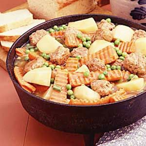

Meatball Garden Stew

Description
This is a recipe for a stew I found while sorting through cookbooks at work. I have not made it yet but if the author is anyone to go by, this meal is great for anyone looking to make a warm, savory, simple meal for the family, friends, or if you're just having a bad day. Serves 6.
Ingredients
- 1 pound lean ground beef
- 4 tablespoons all-purpose flour, divided
- 1 teaspoon salt
- Dash of pepper
- 1 egg
- 1/4 cup milk
- 1/4 cup chopped onion
- 1 tablespoon butter OR margarine
- 1 garlic clove, minced
- 1 can (14 1/2 ounces) beef broth
- 2/3 cup water
- 1/2 teaspoon dried thyme
- 6 medium potatoes, peeled and quartered
- 6 medium carrots, halved lengthwise and crosswise
- 6 green onions, chopped
- 1 package (10 ounces) frozen peas, thawed
Materials
- Cutting board
- Knives
- Large skillet OR Dutch oven OR large pot
- Spoon for stirring
Directions
- In a medium-sized bowl, combine beef, 2 tablespoons of flour, salt, pepper, egg, milk, and onion. Form into 1-inch balls.
- Melt butter in large skillet or Dutch oven.
- Saute garlic for 1 minute.
- Place meatballs into the skillet or Ducth oven and brown them.
- Push meatballs to the side. Blend remaining flour into the drippings.
- Add the broth, water, and thyme.
- Cook until thickened, stirring occassionally.
- Add potatoes, carrots, and onions; stir with meatballs and sauce.
- Cover and simmer until veggies are tender, about 30-35 minutes.
- Add peas and cook another 10 minutes.
- Serve on its own in a bowl or with sides like cornbread!
Homepage